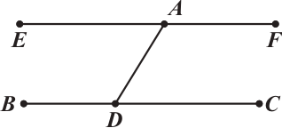

Proposition 31. I
Proposition 31.I. Through a given point to draw a straight line parallel to a given straight line.
Proof. Let A be the given point, and BC the given straight line; thus it is required to draw through the point A a straight line parallel to the straight line BC.
Let a point D be taken at random on BC, and let AD be joined; on the straight line DA, and at the point A on it, let the angle DAE be constructed equal to the angle ADC [I.23]; and let the straight line AF be produced in a straight line with EA.
Then, since the straight line AD falling on the two straight lines BC, EF has made the alternate angles EAD, ADC equal to one another, therefore EAF is parallel to BC.[I.27]
Therefore through the given point A the straight line EAF has been drawn parallel to the given straight line BC. □